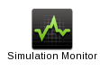

Launch and Monitor
Launch
In your Home tab you have one icon for each of the simulators you have access to:
- Click on the icon corresponding to the simulator you want to use. A new tab opens.
- Fill in the simulation name and the simulation inputs as described on the Simulators description page
- If the inputs are files or folders, use the browse button on the right to browe the distant storage and choose the right input
- Before you launch the simulation, you can use the "Save Inputs" button to save the form and reload it for a future simulation
- Click on the launch button to launch the simulation.
Monitor
In your Home tab you have a 'Monitor Simulations' icon:
.
- Click on the 'Monitor Simulations' icon. A new tab with the list of all your simulations opens.
- The small icon on the left gives the status of the simulation.
- Green wheel = the simulation is running
- Red wheel = the simulation has failed
- Blue tick = the simulation has completed successefully
- For each simulation you can
- Click on the simulation you want to monitor. The simulation will open in a new tab
- Kill the simulation. This will stop all the jobs and the workflow
- Clean the simulation. Attention, this will delete the simulation output and log files!
Monitor one simulation
- Click on the simulation you want to monitor. The simulation will open in a new tab
- On you left hand side, you have three available tabs
- General Information tab (default): gives access to general information, as well as on the simulation logs (output and error files).
- Jobs Summary tab: list of jobs submitted by the platform. Error and stalled jobs are automatically resubmitted.
- Performance statistics: graphs and stats on executed jobs
Retrieving outputs
In the General Information tab of you simulation, on the right hand side, you have access to a list (tree) of the simulation's inputs and outputs.
In order to retrieve the output, simply click on the output link and download it. For more information on file transfer see also the file transfer page.